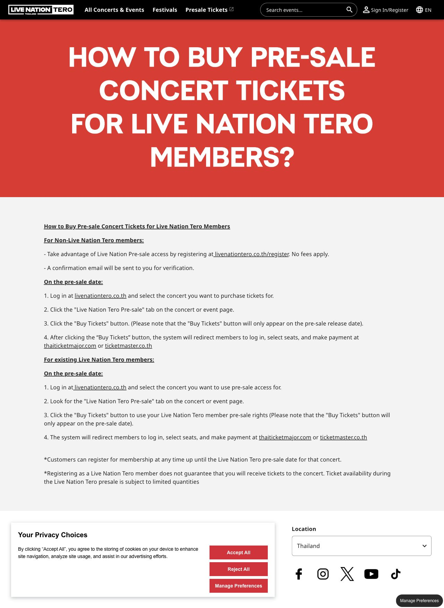
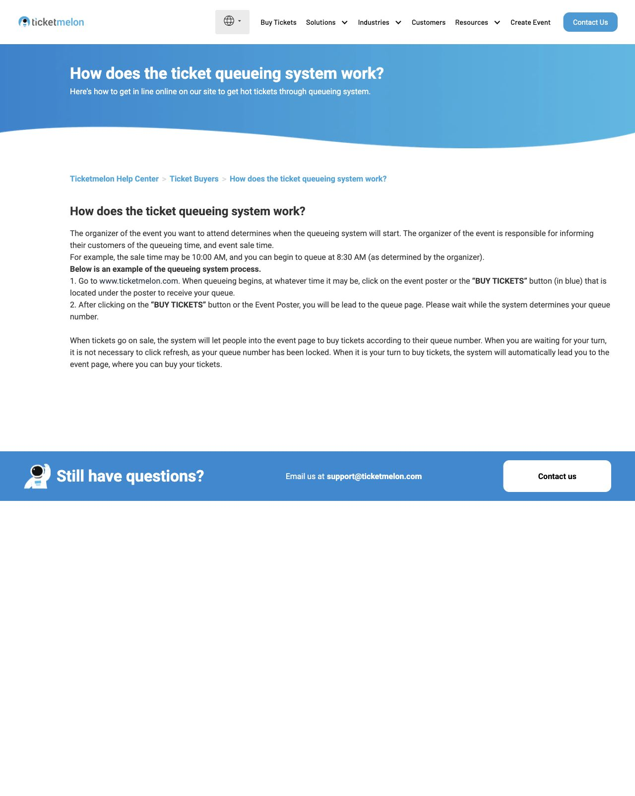

ภาพขั้นตอนจากคู่มือสาธารณะประกอบด้วยเลือกโซน ที่นั่ง และข้อมูลผู้ถือบัตร ENCORE ใช้สถานะที่นั่งแยกกัน ตรวจข้อมูลรายใบ และปุ่มใช้ข้อมูลผู้ซื้อกับบัตรทุกใบ สี จำนวนที่นั่ง และเวลาจองใช้กฎ ENCORE
ข้อกำหนด FR07 FR08 FR09 FR10 · ทดสอบ A15 A16 A19 A20 A46 A54 U01 U03 U18 U20
ใช้เทียบการแสดงหมายเลขคิวและสถานะก่อนเข้าซื้อ ภาพนี้มาจากคู่มือ ไม่ใช่คิวสด ENCORE ไม่ได้ใช้บริการ Queue-it หรืออีเมลแจ้งคิวตามต้นทาง และอายุสิทธิ์/สูตรรอเป็นกฎของ ENCORE
ข้อกำหนด FR03 FR04 FR05 · ทดสอบ A11 A12 A13 A56 A59 U04 U19
ใช้แนวทางการ์ดงานที่แสดงโปสเตอร์ วันเวลา และสถานที่ ENCORE เพิ่มการแบ่งหน้า 6 งานและแยกรอบตามบัญชีตามโจทย์ผู้ใช้
ข้อกำหนด FR02 FR07 · ทดสอบ A04 A44 U08 U15 U17
เทียบการแยกขั้นเข้าสู่ระบบจากการเลือกงาน ENCORE ใช้ชื่อผู้ใช้หรืออีเมลและรหัสผ่าน พร้อมบัญชีทดลองตามโจทย์ ไม่ได้รองรับการเข้าสู่ระบบด้วยผู้ให้บริการภายนอกเหมือนภาพต้นทาง
ข้อกำหนด FR01 FR03 · ทดสอบ A01 A02 A03 A45 U02 U15 U16
ภาพเป็นหน้าคู่มือทางการ ไม่ใช่หน้าซื้อบัตรที่เข้าสู่ระบบแล้ว การกรอกหมายเลขสมาชิกและเพดาน 2 ใบเป็นกฎ ENCORE ที่ผู้ใช้กำหนด ไม่ใช่ข้อสรุปว่านโยบายต้นทางเหมือนกัน
อ้างอิง · Live Nation Tero · คู่มือ Presale
ENCORE · ภาพจากการทดสอบ ข้อกำหนด FR02 FR03 FR05 FR06 FR08 · ทดสอบ A06 A07 A09 A10 A13 A14 A43 A44 U01 U10 U19
ภาพแสดงคำอธิบายขั้นตอนจากคู่มือ ไม่ใช่ภาพคิวสด ENCORE ใช้หมายเลขคิว จำนวนคนก่อนหน้า เวลารอโดยประมาณ และพาไปขั้นถัดไปอัตโนมัติ สูตรเวลาและจำนวนผู้ซื้อพร้อมกันเป็นสมมติฐานของระบบทดลอง
อ้างอิง · Ticketmelon · คู่มือระบบคิว
ENCORE · ภาพจากการทดสอบ ข้อกำหนด FR04 FR05 · ทดสอบ A11 A12 A56 A59 U04 U19
ภาพประกอบจากคู่มือแสดงการตรวจยอดและใบอ้างอิง ENCORE ใช้แนวคิดรหัสอ้างอิงและเวลาหมดอายุ แต่ QR เป็นรหัสทดลอง ไม่โอนเงินจริง และไม่ได้เพิ่ม ATM/iBanking เป็นช่องทางใหม่
ข้อกำหนด FR10 FR11 FR12 · ทดสอบ A22 A23 A24 A25 A26 A28 A29 A30 A47 A50 U11 U12 U13 U14 U24
เทียบการแสดงชื่อผู้ถือ ข้อมูลงาน และ QR บนบัตร ENCORE แสดงบัตรในบัญชีและกล่องอีเมลทดลอง ตรวจรหัส QR ด้วยตัวถอดรหัสอิสระ และจำกัดการเข้าถึงตามเจ้าของ
ข้อกำหนด FR09 FR13 FR14 FR15 FR16 · ทดสอบ A19 A20 A32 A33 A34 A36 A51 A55 A58 U01 U07 U16 U23 U24ภาพคู่มือบางส่วนเป็นตัวอย่างหน้าจอรุ่นก่อน ไม่ใช่การทดลองซื้อจริงบนเว็บต้นทาง และไม่ใช้แทนหลักฐานทดสอบ ENCORE